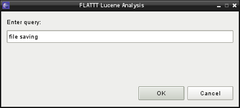
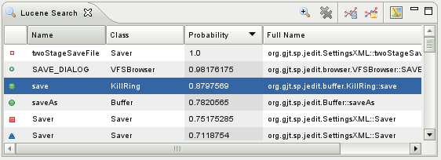
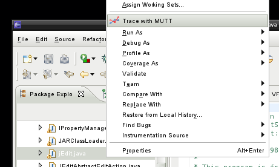
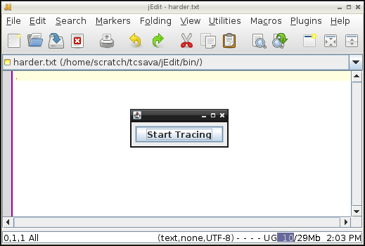
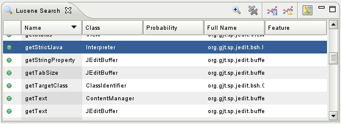
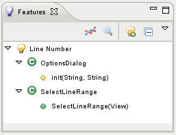
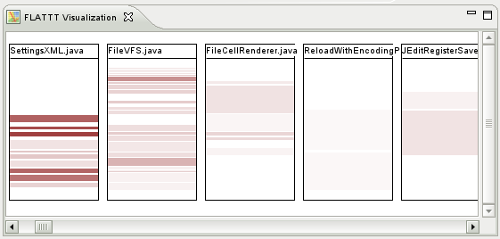

FLAT3: Feature Location and Textual Tracing Tool
FLAT3 is an Eclipse plugin that integrates static and dynamic feature location techniques with a feature annotation function, providing a complete suite of tools to allow developers to locate the code that implements a feature and then save these mappings in a rich format.
FLAT3 provides two feature location tools that can be used together. The first uses the Lucene library's information retrieval technique to locate code that uses words similar to the user query.
The second tool uses MUTT, a JPDA-based tracing tool, which can be used to capture all of the methods that are invoked during the execution of a particular feature. The Lucene search feature can then be used to filter these results.
Finally, the feature mapping functionalities based on ConcernTagger and ConcernMapper can be used to easily save the results found with the Lucene and MUTT based tools, combining their expertise with that of the developer themselves. This feature mapping will then be a valuable link between the abstract concepts implemented in a project and the code that actually implements those concepts.
Walkthrough
Textual Feature Location
- Open up the FLAT3 features view, then click on the search toolbar button (
 ).
). - A query dialog will be displayed, in which you can type your query. Once you confirm the dialog, Lucene will index your workspace if it hasn't already, and the results view will appear.
- From this view, you can browse your results and add them to features. Double click a result to view it in your project's source code. Right click a result to access menu items which let you link or unlink the element with a feature. If you wish to refine your search by searching within the results you've already found, use the Refine Search button (
 ) on the search view toolbar. To return to your original results, click the Clear Refined Search button (
) on the search view toolbar. To return to your original results, click the Clear Refined Search button ( ).
).


Trace Feature Location
-

- To begin tracing a program, right click java file with the main method in one of Eclipse's exploration views and select "Trace with MUTT" (
 ).
). - The program will launch, along with a start/stop window that will allow you to start and stop the recording of the trace, to allow you to capture only the methods called when a particular feature is executed. Once you're done tracing, close the application.
- The search view will be displayed, loaded with the methods called during your trace. Since the trace will likely have found many methods, you will likely want to use the Lucene combinational search to narrow your results. To do this, click the Refine Search button () button on the search view toolbar and enter a query in the dialog. To return to your original trace results, click the Clear Refined Search button ().
- From the search view, you can also double click methods to view them, right click them to add or remove them from features, and also use the toolbar buttons to save the trace (
 ) so you can load (
) so you can load ( ) and browse it later.
) and browse it later.


Feature Mapping
-

- Open the feature view to begin managing features. From here, you can add (
 ), remove (
), remove ( ), and browse the features you've created, as well as do advanced tasks like import or export them from the toolbar menu.
), and browse the features you've created, as well as do advanced tasks like import or export them from the toolbar menu. - You can also add or remove elements from features from other views, like Eclipse's exploration and overview views and FLAT3's search view, by right clicking the correspoding element.
Visualization
-

- FLAT3 also features a rudimentary visualization feature, accessible by right clicking on a feature and selecting "Visualize concern..." or by clicking the Visualize button (
 ) when you have search/trace results in the search view
) when you have search/trace results in the search view - This view simply visualizes the files that the feature or search results are distributed throughout, highlighting in red the sections of the files that correspond to elements linked to a feature or listed in search or trace results. If textual search results are visualized, the transparency of the red blocks is mapped to the probability that they match the user's query.
- This visualization employs the same metaphor that AspectBrowser uses to visualize the distribution of aspects among files.
Installation
To install the plugin, download the JAR file and drop it in your "plugins" folder inside your Eclipse home directory. When you restart Eclipse, the FLAT3 views should be available under Window -> Show View -> Other -> FLATTT. Open the Features view to get started using FLAT3.
To load the Eclipse project containing the FLAT3 source code, download the project TAR file. Open the import dialog in Eclipse (File -> Import) and select General -> Existing Projects into Workspace. Click next, then browse and select the tar file you downloaded. Click finish, and the project should be loaded into your workspace.
FLAT3 has been developed and tested primarily on Linux, with Eclipse version 3.4 and Java 1.6. It currently requires Java 1.6, and for this reason you'll need to run it using the 64-bit Cocoa build of Eclipse if you're using Mac OS X.
Acknowledgements
Thanks are due to ConcernTagger and ConcernMapper, which provide the feature mapping functionality, MUTT, which is used for tracing programs, and Lucene, which provides information retrieval functionality for the textual feature location tool. AspectBrowser provided useful inspiration for the design of the visualization functionality.
People
- Trevor Savage (main developer)
E-mail: tcsava at wm dot edu
- Denys Poshyvanyk
E-mail: denys at cs dot wm dot edu
- Meghan Revelle
E-mail: meghan at cs dot wm dot edu